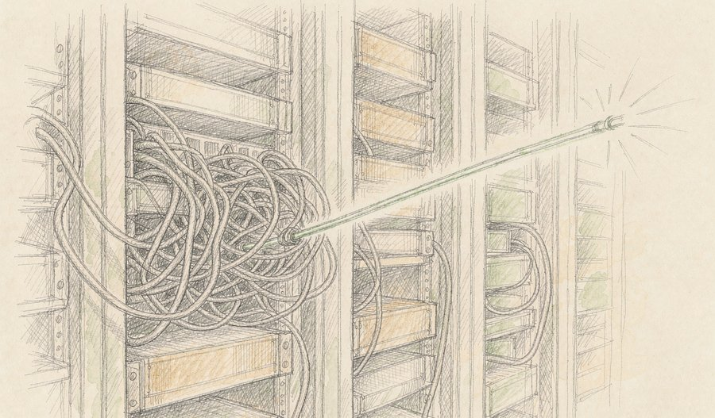
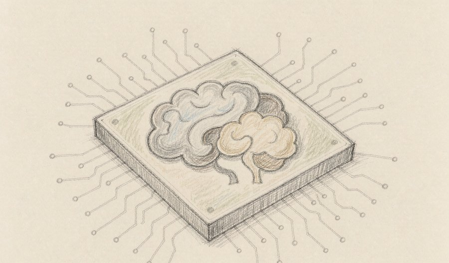
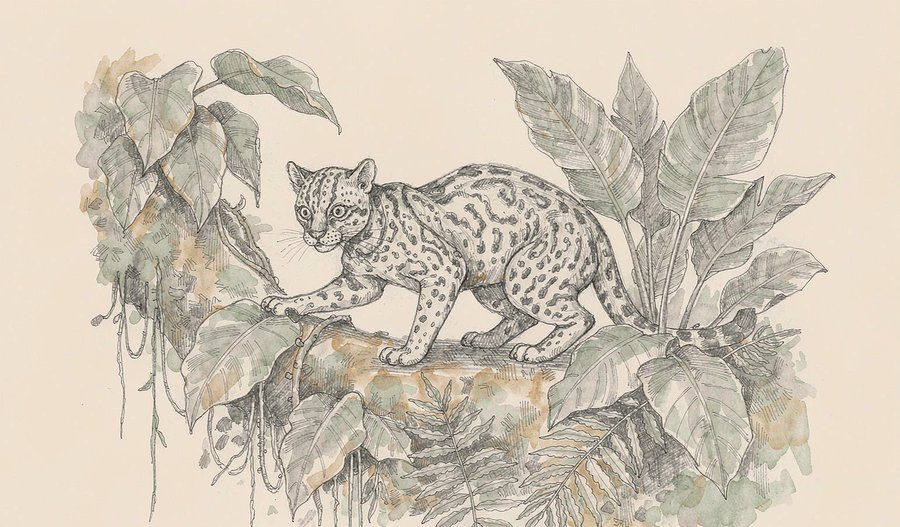
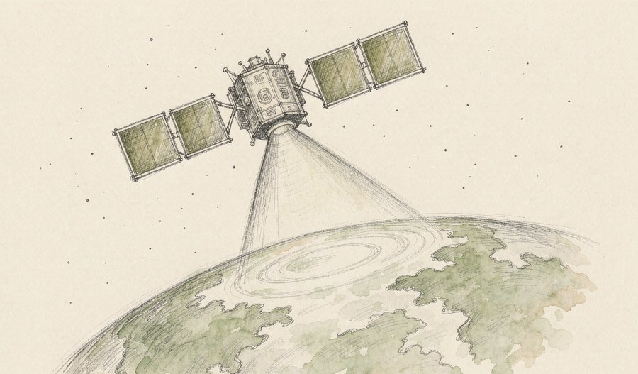
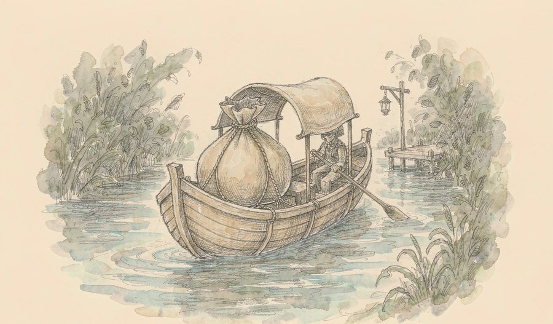
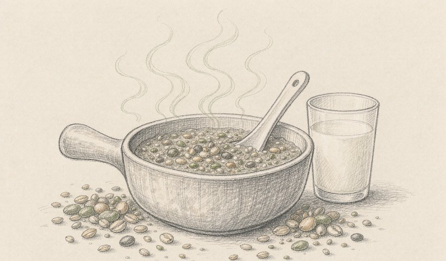
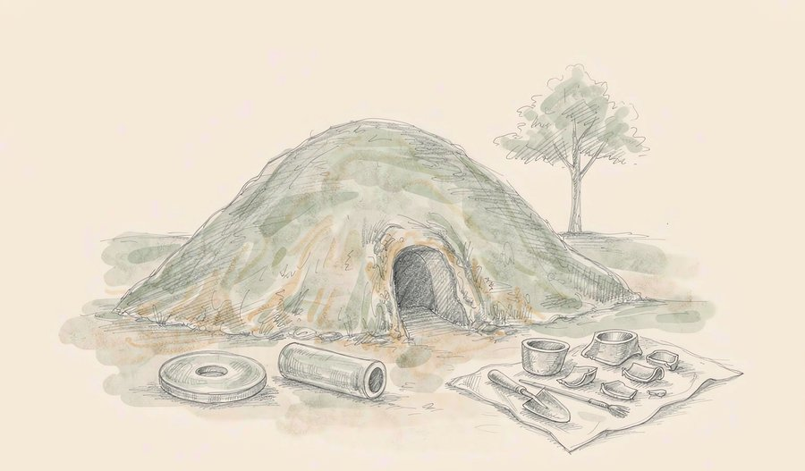
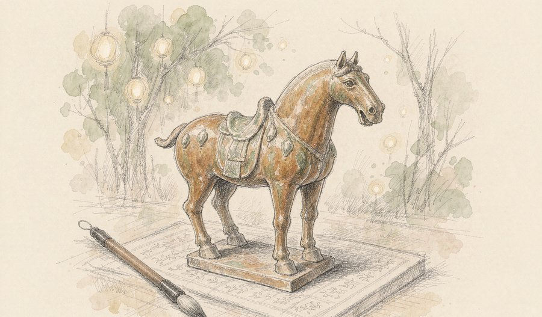
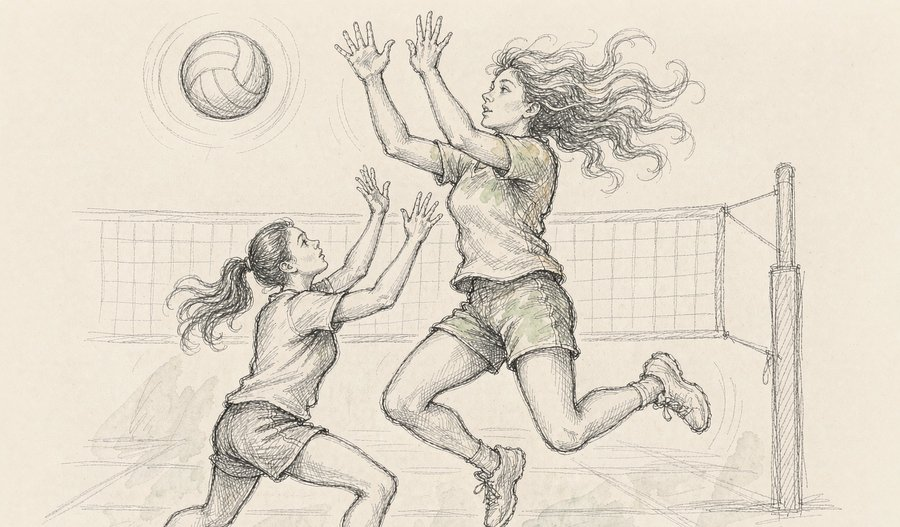

一颗猪肾，在人身体里足足工作了271天。
这是今天最动人的数字。麻省总医院把基因编辑猪肾当成一座「桥」，让等不到人肾的患者先靠它活下来，再稳稳走到真正的人肾移植那天——《柳叶刀》把这第一例摆渡写进了正史。
机器那边也换了活法。华为把四万八千个光模块换成五千五百个光引擎，用光替铜线说话，把上万颗芯片拧成一台逻辑上完整的大机器。
考古现场同样安静地惊人：咸阳一座秦王级别大墓的墓主浮出水面，可能是秦始皇的祖母；西安一座唐墓里，陶马底下刻着「火树银花合」——一首唐诗在黑暗中睡了一千三百年。今天的十条，就从这些「第一次」讲起。
今天最重的一条线，是「衔接」二字：猪肾为人肾衔接，光引擎为芯片衔接，在轨智能为卫星与地面衔接。三个领域不约而同在做同一件事——不再孤军突破单点，而是把两段原本断开的路，接成一条能走通的路。
01
9月19日报道，中国科学院半导体所联合多家机构在《科学》发表新型滑移铁电隧道结：在0.5伏读电压下，隧穿电阻比达1.9×10⁷，比以往同类器件高出四个数量级以上，开关耐久突破一千万亿次。器件用二维材料层间滑移改变极化，13纳秒脉冲即可稳定翻转，单次能耗仅6.5飞焦。
观此：存储器件的老大难是「读得清楚」和「经久耐用」互相牵制——要对比度就得多加电压，多加电压就折寿。这个团队用范德华异质结构的界面工程，把弱极化撬成了大电阻差，等于两头都要了。数字背后是一条清晰的路线：让二维材料的「滑」这种全新物理，直接变成能读出来的电信号。如果良率跟得上，存算一体芯片会多一种便宜又皮实的候选。
来源：Pandaily
02

9月19日，华为全联接大会在上海收官。会上发布的Atlas 960E超节点首次采用近封装光学互联，单个系统可容纳4096颗昇腾处理器，FP8算力最高8 EFLOPS，支持近10万亿参数模型训练与推理，计划2027年第三季度上市；配套的升腾960训练芯片提前三个季度，定档2027年一季度。
观此：大模型的瓶颈正在从单颗芯片挪到「芯片之间」——上万个处理器互相喊话，铜线又慢又费电。华为的解法是把光源直接封进封装里，5500个Hi-ONE光引擎顶替约48000个传统800G光模块，宣称省电超过550千瓦。更值得注意的是配套架构可扩展到百万卡级：竞争的维度已经从「谁的芯片强」变成「谁能把更多芯片拧成一台机器」。
来源：科创板日报
03

9月17日，广州华睿智普在杭州发布物理AI端侧算力平台「智能超脑」，核心产品Praxis One基于联发科Genio Pro 5100三纳米芯片打造，把机器人的认知决策与实时运动控制放进同一颗芯片，神经网络算力约106 TOPS，可本地运行70亿参数大模型，并支持零下40摄氏度到105摄氏度的工业温度。
观此：人形机器人常见的方案是「大脑芯片管思考、小脑控制器管动作」，两颗芯片之间一来一回，时延和数据损耗都是隐患。单芯片融合把决策和控制的距离压到毫米级，断网时本地大模型照常运转——这对工厂和户外场景是实打实的可用性。机器人产业的竞争，正在从「会做几个动作」下沉到「谁的端侧算力底座更省、更稳、更便宜」。
来源：搜狐科技
04

9月17日《当代生物学》刊发研究：一种栖息于玻利维亚永加斯森林的小型野猫被确认为全新物种，属于虎猫属。它体长约46厘米、体重约1.4公斤，比普通家猫还小一号，生活在安第斯山脉东麓的云雾丛林里。这是百余年来人类首次发现现存猫科动物新物种。
观此：猫科是研究得最透的动物类群之一，连它们都有新物种藏在人类眼皮底下，足见热带山地的生物多样性被低估到什么程度。这次确认靠的是形态与遗传证据的交叉验证——「长得不一样」不够，基因说清楚才算数。新名字背后是一个提醒：物种清点远没到收官的时候，而清点，恰恰是保护的第一步。
来源：央视新闻
05

9月19日18时50分，长征二号丁火箭在太原卫星发射中心以一箭四星方式，将银河航天自主研制的四颗合成孔径雷达卫星送入预定轨道，这是长征系列火箭第668次飞行。四颗卫星搭载星上智能处理与任务规划载荷，可直接在轨完成数据筛选、预处理与信息提取。至此银河航天累计发射自研卫星53颗。
观此：遥感卫星的传统短板是「拍得到、传不动」：原始雷达数据体积惊人，全靠地面站排队消化。把智能解译搬上卫星，等于把化验室直接装进采血车，落地的是灾情、农情这类「等不起」的场景响应速度。今天这次任务还顺手验证了SAR卫星的批量生产能力——商业航天拼到后来，拼的就是像造产品一样造卫星。
来源：新华社
06

9月初，《柳叶刀》刊发美国麻省总医院研究：66岁的蒂姆·安德鲁斯因终末期肾病，于2025年初植入基因编辑猪肾，创下猪肾在人体内工作271天的纪录；去年10月猪肾因血栓性微血管病变失效被摘除，82天后他等到了匹配的人肾完成移植。如今他能做饭、遛狗、划独木舟。
观此：这个案例最聪明的地方是想通了「猪肾不必永远」。器官缺口巨大，与其赌一颗猪肾用一辈子，不如让它当几个月的桥，把病人从透析机上摆渡到真正的人肾面前——试验证明这条路走得通，而且走得有生活质量。基因编辑供体器官的价值排序，可能就此从「终极替代」调整为「时间换空间」。
来源：中国新闻周刊
07

近日，市场监管总局批准注册两款适用于10岁以上肿瘤患者的特定全营养配方食品，填补了该类产品的国产空白。至此，我国特医食品实现大类全覆盖，肿瘤患者临床营养支持有了更多本土选择。
观此：肿瘤治疗里，「吃」从来不是小事——营养不良直接影响耐受治疗的能力，而国产特医食品长期缺位，患者只能依赖进口产品。特医食品按「药品级」注册管理，审批一道道过，补齐这一类意味着整条监管与产业路径已经成熟。医学进步不只是新药和手术刀，把营养这一环补牢，同样是救命的工程。
来源：央视新闻
08

9月18日，陕西省考古研究院公布咸阳市渭城区上召窑秦陵考古成果：经勘探发掘，确认这是一处战国晚期秦王级别的墓葬，专家推测墓主可能为秦孝文王王后华阳太后——也就是秦始皇的祖母。
观此：华阳太后是秦史里极有分量却常被略过的女性：凭借楚系外戚的势力庇护年少的嬴异人、间接改写了王位继承线，秦始皇统一天下前的宫廷格局与她息息相关。秦王陵区的空白正在被一座座填上，墓葬规格、出土玉器与文献记载互相对照，等于给战国晚期的礼制与权力结构做了一次实物校勘。历史书里的一句话，落到地上就是一座墓。
来源：新华社
09

9月18日从陕西省考古研究院获悉，考古工作者在西安市长安区一座唐代高等级墓葬中，发现一件陶马踏板，器底刻有苏味道《正月十五夜》名句「火树银花合，星桥铁锁开」的节选摹写文字，是极为罕见的唐代诗歌刻字实物遗存。
观此：我们熟悉的唐诗都活在纸页和课本里，而这件陶马把诗带回它被写下的年代——刻字的可能是工匠，也可能是墓主人生前所爱，千年后替今人确认了一件事：这些句子从诞生起就在被传抄、被喜爱，不是后人追封的。实物与传世文献第一次这样并排站着，文学史瞬间有了手感。
来源：新华社
10

9月18日，2026年亚运会女排小组赛，中国女排以3比0（25比18、25比6、25比14）战胜哈萨克斯坦队，拿下两连胜，以小组第一晋级八强。第二局单局只让对手拿到6分。
观此：25比6这种悬殊比分在国际赛场并不多见，它比「赢了」多说出两层信息：发接发的压制力和轮次的稳定性都到了档位。亚运会小组赛的真正价值从来不在比分本身，而在把阵容磨合、替补轮换这些功课在淘汰赛前做完。八强赛才是这套阵容的第一张真考卷。
来源：央视新闻
第一条主线：机器学会了「用光」和「用脑」。华为的Atlas 960E把近封装光学做成超节点的标配，看似是参数堆叠，实质是承认了一个新现实——继续在单颗芯片上抠性能，性价比已经不划算了，把系统级互联做成「一台机器」才是下一程。同一天，华睿智普把机器人的大小脑塞进同一颗3纳米芯片，走的是反方向：不追求更强，而追求更近。两条路线看似矛盾，其实指向同一个判断——未来几年算力竞争的关键词不再是「快」，而是「衔接」：芯片与芯片之间、决策与动作之间，谁把距离压得最短，谁就赢。
第二条主线：身体成了一座中转站。猪肾摆渡案最值得细读的不是271天的纪录，而是医学思路的转变：不再要求替代器官「一步到位」，而是坦然接受「先顶一段」。这个思路和mRNA让身体自己造药、个体化药物为一个人定制，是同一代际的产物——治疗正在变成一段被精心设计的旅程，而不是一次性交付的工程。肿瘤特医食品获批看起来体量小得多，但它是同一条逻辑的民生端：把「营养支持」从家属的焦虑变成标准化处方，医疗体系的毛细血管才算真正接通。
第三条主线：大地还在交底。华阳太后墓与「火树银花」陶马在同一天进入公众视野，纯属巧合，却凑成了一堂极好的历史课——前者补的是权力结构的实物证据，后者补的是日常生活的情感温度。考古的价值正在于此：文献记载告诉我们「有过什么」，出土实物告诉我们「是什么样」。当一首唐诗的摹写出现在陶马底下，文学史与物质史在一张器物上握手，这种瞬间比任何转述都更有说服力。
如果只记一件，记那颗工作了271天的猪肾：它没有坚持到最后，却恰到好处地把一位病人送到了人肾面前——医学第一次证明，器官移植可以是一段接力，而不是一场独奏。
今天的精选里，科技在重排算力的连接方式，科学从丛林、卫星和古墓三个方向各交了一份新答卷，健康把「过渡与支持」做成了正经疗法，人文则让一位太后和一句唐诗重新开口。单点突破的时代正在让位于衔接的时代，这是今日十条共同的底色。
内容仅供资讯参考。
本文插画由 AI 辅助绘制。